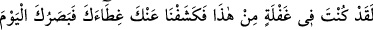
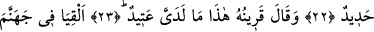
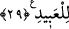

HUZÛRUMDA
SÖZ DEĞİŞTİRİLMEZ
22. Andolsun sen bundan gaflette idin; derhal biz senin perdeni kaldırdık. Bugün
artık gözün keskindir (denir).
23. Yanındaki arkadaşı: «İşte yanımdaki hazır, der.
24. (İki meleğe şu emir verilir:) Haydi ikiniz her inatçı kâfiri,
25. Hayra bütün gücüyle engel olanı, azgın şüpheciyi cehenneme atın;
26. Allah ile beraber başka ilâh edineni, şiddetli azaba birlikte atın!
27. Müşrikin arkadaşı (şeytan) der ki: Rabbimiz! Ben onu azdırmadım. Fakat
kendisi derin bir sapıklık içindeydi.
28. O esnada (Allah) buyurur: Huzurumda çekişmeyin! Ben size daha önce uyarı
göndermiştim!
29. Benim huzurumda söz değiştirilmez ve ben kullara asla zulmedici değilim.
“Andolsun sen bundan gaflette idin.” Gaflet, insanın, işlerin hakikatine vâkıf
olmasını engeller. Müfredât’ta gaflet kelimesi, “tedbir, uyanıklık ve mâna eksikliğinden
dolayı ortaya çıkan hatâdır” şeklinde tanımlanmıştır. Bu kişiye kıyamet gününde, nüşûr
anında veya arz edilme vaktinde “ey kişi sen dünyada bu gün ve bugünün sıkıntıları
konusunda gaflet içindeydin” denir.
Fethu’r-rahman’da “bundan” ifadesi için “o günde başına gelecek şeylerden”
şeklinde bir açıklama yapılmıştır. İbn Abbas (r.a.) ise bu ifade için “küfrün
akibetinden” açıklamasını yapmıştır.
Aynü’l-maânî’de ise “sevk eden ve şâhid olandan” denmiştir.
“Küll/hepsi” ile hitap edilmesi âhiret hakkında gafleti olmayan tek bir kişi bile